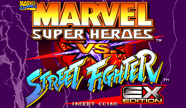
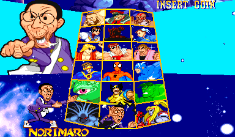
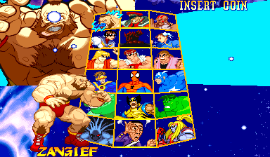
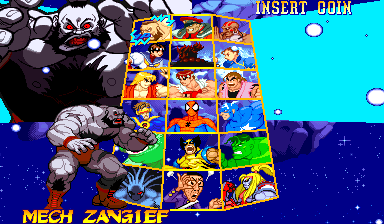
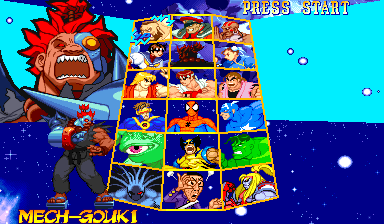

Marvel Super Heroes vs. Street Fighter EX
Norimaro, the bosses and more, in every region
Screenshots


Cursor on Zangief

After a two-second Start hold


About this patch
Marvel Super Heroes vs. Street Fighter kept a lot from you. Outside Japan there was no Norimaro. Nowhere could you play as Cyber-Akuma or Apocalypse, or put the same fighter on a team twice. The console ports later added extra colors and more speeds, but only at home.
EX gives the arcade game all of it. Norimaro is on the select screen in both builds, with his own ending. Hold Start on any fighter for two seconds and their hidden version appears, no codes needed, though the old codes still work. Any two fighters make a team. Cyber-Akuma and Apocalypse are playable too: hold Start on Akuma for one, on Norimaro for the other. Every fighter gets the Saturn version's two extra colors, on the HP and HK buttons, and the service menu goes from three speeds to eight.
The fighting itself is untouched: no changes to moves, damage, hitboxes or the computer. The USA build also gets a new translation, straight from the Japanese: sixteen win quotes per fighter instead of eight, and every ending retold. It comes in two builds, USA and Japan, both with Free Play, and runs in MAME, HBMAME and on MiSTer.
This is a release candidate. Everything builds and boots; longer play testing and a MiSTer hardware pass are still to come.
What's changed
- Norimaro in both builds, with his own ending
- Cyber-Akuma and Apocalypse playable: hold Start on Akuma, or on Norimaro. Their special moves work on the Easy control setting too
- Hidden characters with a two-second Start hold; the old codes still work
- Any team, including the same fighter twice, in a different color (one Apocalypse per match, so his stage stays intact)
- Every ending in both languages, including Mech-Zangief's, Shadow's and Dark Sakura's
- A new English translation from the Japanese: sixteen win quotes per fighter instead of eight, and all seventeen standard endings
- U.S. Agent, Mephisto and Shadow get their names in the fight HUD, which the boards leave blank
- M. Bison's Hyper Combo is Knee Press Nightmare in every region, the name Capcom has used since Alpha 3
- Two extra colors per fighter from the Saturn version: pick your fighter with HP or HK
- Eight game speeds instead of three
- USA and Japan builds, both with Free Play
- Gameplay untouched
Compared with the boards
How EX compares with the Japanese and US boards.
| Japan | USA | EX | |
|---|---|---|---|
| Norimaro | Yes | No | Yes |
| Norimaro's ending | His own | None | His own |
| Mech-Zangief, Shadow, Dark Sakura endings | Yes, Japanese | Generic | Yes, in both languages |
| English win quotes per fighter | None | 8 | 16, translated from the Japanese |
| Hidden characters | Codes | Codes | Two-second hold, or codes |
| Cyber-Akuma | Boss only | Boss only | Playable, hold Start on Akuma |
| Apocalypse | Boss only | Boss only | Playable, hold Start on Norimaro |
| Same fighter twice | No | No | Yes |
| Colors per fighter | 2 | 2 | 4 |
| HUD names for U.S. Agent, Mephisto, Shadow | Blank | Blank | Yes |
| Game speeds | 3 | 3 | 8 |
| Free Play | Yes | Some regions | Yes |
| Gameplay | Original | Original | Original |
Downloads
You need your own dump of Marvel Super Heroes vs. Street Fighter (Japan 970707) as the MAME
set mshvsfj.zip. Every build is made from that one set.
Each zip includes a readme.txt with full instructions.
The builds
| Build | --variant | MiSTer setname | HBMAME set |
|---|---|---|---|
| USA | usa | mshvsfex | mshvsfex |
| Japan | japan | mshvsfej | mshvsfej |
How to apply
unzip mshvsf-ex-rc1-ips.zip -d mshvsfj-patch
cd mshvsfj-patch
python3 apply.py /path/to/mshvsfj.zip --out-dir outThe script checks every file against the checksums below, applies the patches,
checks the result, and writes the files for every platform in one go: (add --variant usa to make just one build)
USA:
out/mame/usa/mshvsfj.zip
out/hbmame/mshvsfex.zip
out/mister/_Arcade/_Arcade Patches/_Enhanced Versions/Marvel Super Heroes Vs. Street Fighter EX (USA).mra
Japan:
out/mame/japan/mshvsfj.zip
out/hbmame/mshvsfej.zip
out/mister/_Arcade/_Arcade Patches/_Enhanced Versions/_Japan/Marvel Super Heroes Vs. Street Fighter EX (Japan).mraMAME and original hardware. Put the zip from out/mame/ ahead of the
stock set in your MAME rompath (it keeps the name mshvsfj.zip, so use one build at a time), or burn its ROM
files. MAME reports checksum warnings for the patched ROMs. That's expected, and the game runs
normally.
HBMAME. Put the zip from out/hbmame/ in HBMAME's
roms/ folder next to your stock mshvsfj.zip. It loads with no checksum
warnings. The HBMAME set definition (mshvsfex, mshvsfej) is generated with the patch; an upstream submission is pending, so for now you add it to your own HBMAME build.
MiSTer. Copy the _Arcade folder from
out/mister/ to the root of your SD card, and keep the stock, unmodified romset at
games/mame/mshvsfj.zip (split MAME sets also need qsound.zip). You need
Jotego's jtcps2 core, which update_all installs. The MRA applies the patch in memory
as the game loads, so nothing on your card is modified, and each build keeps its own settings and saves under its own setname.
The MiSTer-only download holds the same MRAs, ready to copy.
Any IPS patcher. Apply each file in ips/<variant>/
(Flips, Lunar IPS, …) to the ROM file of the same name and re-zip the set yourself.
Changed ROMs
Shared by every build:
| File | Size | Original CRC32 | Patched CRC32 |
|---|---|---|---|
| mvs.05h | 512 KB | 77870dc3 | 5a83d5cc |
| mvs.06a | 512 KB | 959f3030 | 444fb179 |
| mvs.07b | 512 KB | 7f915bdb | e9cbc426 |
| mvs.10b | 512 KB | cf0dba98 | c4faa1f9 |
| mvs.13m | 4.0 MB | 29b05fd9 | 5aec3072 |
| mvs.15m | 4.0 MB | faddccf1 | b3b37f0c |
| mvs.17m | 4.0 MB | 97aaf4c7 | 763798a3 |
| mvs.19m | 4.0 MB | cb70e915 | 6fc69f7e |
| mvsj.04i | 512 KB | 32741ace | c9d11ca7 |
mvsj.03i (512 KB, original CRC32 d8cbb691) differs per build:
| Build | Patched CRC32 |
|---|---|
| USA | c514a97e |
| Japan | 72fd9929 |
Related projects
- Marvel Super Heroes vs. Street Fighter, the restoration on its own, without the EX additions
- RQ87: Norimaro, the Norimaro localization inventory this project credits
- Arcade Offset, himanito's earlier Unlocked MRAs covered some of this ground; this is an independent implementation
- CPS+, companion project: arranged soundtracks for CPS-2 games on MiSTer
Notes
- MAME shows checksum warnings for the ten patched files. That's expected; the game plays normally. HBMAME with the matching set definitions loads them without them.
- Fan work, unaffiliated with Capcom or Marvel. The patch contains no ROM data; you need your own dump of the Japanese set.